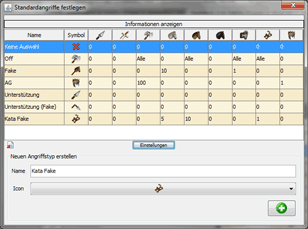

Standardangriffe |
|
|  | |
| Die Einstellung der Standardangriffe dient dazu, Truppenzahlen festzulegen, die bei der Übertragung von Angriffen oder Unterstützungen in den Browser verwendet werden sollen. So kann man, wie in der Tabelle zu sehen, z.B. festlegen, dass eine Off stets aus allen Einheiten vom Typ Axt, LKav, Ramme und Katapult besteht, während ein AG-Angriff 100 Äxte und 1 AG beinhaltet. Unter der Tabelle findet ihr einen Button 'Einstellungen', der es euch erlaubt, eigene Standardangriffe zu definieren, die ihr später euren Angriffen zuweisen könnt. Dabei ist darauf zu achten, dass weder die Namen noch die Icons der vorgebenen Standardangriffe erneut verwendet werden dürfen. Die Möglichkeiten, welche Werte in den einzelnen Feldern der Tabelle stehen dürfen, findet ihr, wenn ihr oberhalb der Tabelle auf 'Informationen anzeigen' klickt. Schließt ihr das Fenster, werden die Einstellungen automatisch gespeichert. |
|
| Die Übertragung der Truppenanzahl in den Browser ist für Firefox und Opera möglich. Voraussetzung für die Übertragung der Truppenzahlen ist, dass das Userscript 'dswb.user.js' das sich im Verzeichnis 'Script' befindet, in den Browser eingebunden wird. Eine Beschreibung zum Scripts und zur Installation findet ihr hier. | |